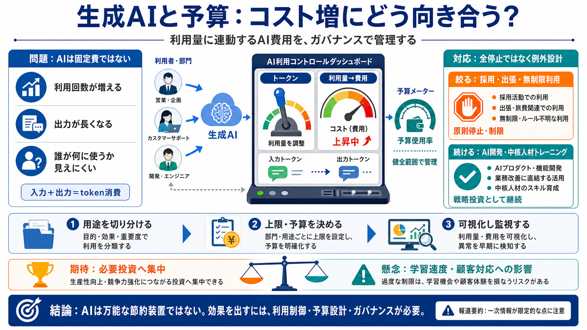

AI Cost Optimization Strategies for 2026: A Practical Guide
Prompt and context controls improve model performance and reduce cost per request. Small token reductions compound acros…

Prompt and context controls improve model performance and reduce cost per request. Small token reductions compound acros…
The internal memo comes as companies continue to assess the financial impact of deploying AI tools at scale. According …
Model cost variance is extreme. GPT-4o output tokens cost approximately $15 per million at published 2025 pricing. GPT-4…
5 FinOps practices you should apply to AI AI ## 5 FinOps practices you should apply to AI July 30, 2026 AI cost gove…
Recent news has been rife with stories about AI cutbacks and now 404 Media reports that consulting firm Accenture has be…